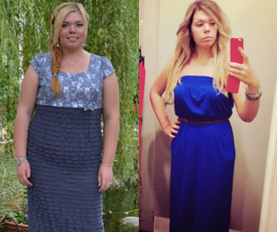
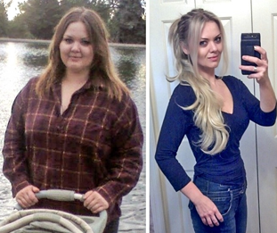
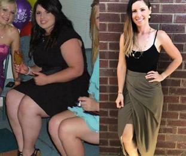
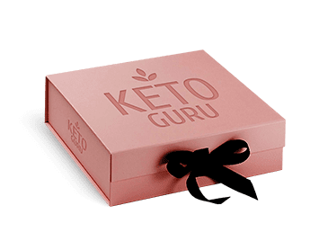

Диеты
и спорт - самые неэффективные методы для похудения!
Считается, что занятия спортом и диета быстро сжигают жир. Специалисты доказали, что это самые неэффективные методы
Недостатки диеты:
-
Чувство голода, еда по часам
-
Отказ от любимых продуктов и блюд
-
Вероятность срыва - 95%
-
После завершения диеты вес возвращается
-
Сжигается мышечная масса, а не жир
Недостатки спорта:
-
Посещение спортзала 3-4 раза в неделю
-
Низкая эффективность - результаты заметны через 4-6 недель
-
Большая нагрузка на суставы и мышцы
-
Противопоказания определенным видам нагрузок при избыточной массе тела
Программа безопасного снижения веса по принципу кето - диеты
-
 Эффективно
Эффективно
Сброшенные килограммы не возвращаются
-
 Быстро
Быстро
Первые результаты уже через несколько дней
-
Безопасно
Без вреда для здоровья, без срывов
Узнайте, не пора ли вам худеть - внесите свои данные в поля калькулятора.
ИМТ Больше 25
У вас избыточная масса тела. Вес срочно нуждается в коррекции. Не откладывайте похудение - начните путь к
стройной фигуре прямо сейчас вместе с Keto Guru.
ИМТ 18 - 25
Вес в пределах нормы, присутствует склонность к полноте. Чтобы не набрать лишние килограммы и поддерживать
себя в форме пропейте курс Keto Guru.
ИМТ Меньше 18
Ваш организм находится на грани истощения. Keto Guru поможет стабилизировать вес и поддерживать его в
пределах нормы.
- -
- +
- +
- +
- +
-
Магний
Снимает раздражительность, предотвращает развитие депрессии, улучшает общее состояние.
-
Аминомасляная кислота
Повышает концентрацию внимания, улучшает качество сна, способствует расслаблению.
-
L-глутамин
Снижает усталость, повышает выносливость, обеспечивает похудение за счет сжигания жировых отложений, а не мышечной массы.
-
Витамины группы B
Поддерживают работу всех систем и органов, снижают уровень холестерина, улучшают репродуктивную функцию.
-
Калий
Снижает риск развития кето-гриппа при соблюдении диеты, нормализует кровяное давление, устраняет слабость мышц.
их жизнь
на “ДО” и “ПОСЛЕ”
-

 Anna Stepanova
Anna Stepanova
111 отметок "Нравится"
Однажды я случайно наткнулась в инсте на блог одной прекрасной девушки, которая похудела примерно на 70 кг на средстве Keto Guru, которое полностью заменило ей кето-диету. Поспрашивала я об этом средстве, почитала.... Инфы в интернете масса, но нужно уметь отделять ложь от правды. В этом мне помогли некоторые знающие гуру, которых я также нашла в инсте.
За месяц я скинула 10 кг! Причем не чувствуя голода и иногда даже переедая. Я не отказываю себе в удовольствиях и при этом полностью забила на спорт.😉
Мои результаты с Keto Guru: - я похудела на 10 кг. Сейчас я вешу 68 кг. Этот вес у меня был года 4 назад последний раз. Впереди еще 8 кг!
- я стала лучше себя чувствовать.
- я перестала быть злой и агрессивной.
- улучшилось состояние кожи.
Keto Guru - отличный способ похудеть для тех, кто не хочет ничего менять в своей жизни, для таких как я!
#Keto Guru #grow thin without limits
7 МЕСЯЦЕВ НАЗАД -
Inna Semenova
111 отметок "Нравится"
После вторых родов я поправилась на 20 кг. Пока кормила грудью, вес не уходил. Перестала кормить и стала искать диету для похудения. Выбрала себе кето-диету, и осталась разочарована. Трижды я срывалась, набирала новые килограммы, чувствовала себя ужасно, была нервной, срывалась на детях и муже. После третьего срыва я поняла, что это не мое, и стала искать альтернативу. Ее я нашла в облике Keto Guru. Отзывы были очень положительные и вселяли уверенность в успех. Заказала, стала принимать строго по инструкции, через 2 недели сбросила 8 кг,😊 а полностью вес ушел за один курс приема! Очень довольна результатом, только посмотрите на мои фотки до и после - это же небо и земля. Муж теперь меня на руках носит, гордится тем что я так быстро смогла в форму прийти. Вот уже полгода как завершила свою программу похудения, но для профилактики раз в несколько месяцев все же пропиваю курс шипучих таблеток.
#KETOGURU #forever
7 МЕСЯЦЕВ НАЗАД -
Anna Stepanova
111 отметок "Нравится"
С возрастом стала поправляться. За 5 лет набрала 40 кг. Муж ушел, сказал, что такая жирная корова ему на фиг не сдалась. В тот момент я поняла, что надо что-то менять в своей жизни. Спортом я никогда не интересовалась, хотя на работе у меня был неограниченный и бесплатный доступ в спортзал и бассейн. Но с массой тела за 100 кг сложно заниматься. Пыталась питаться правильно - меня хватало на 3 дня и я оказывалась в фастфуде с ведром крылышек и картошкой-фри. Заказывала себе сбалансированное питание, которое доставляют ежедневно. Но блюда, которые надо растягивать на 4-5 приемов пищи, я съедала на завтрак, а потом догонялась вредными продуктами. Однажды я встретила знакомую, которая сильно похудела после вторых родов. Она рассказала мне про Keto Guru. Я заказала себе шипучие растворимые таблетки. Стала пить по инструкции - 1 раз в день. В общем скажу так - согнать лишний вес я смогла за 2 курса. Спустя 2 месяца я остаюсь такой же красивой и стройной, ни в чем себя не ограничиваю. Единственное, что я изменила - стала посещать бассейн, люблю поплавать. К тому же если раньше я ужасно стеснялась своего тела, то теперь делаю это с удовольствием и никакой неловкости от своего тела в купальнике я не испытываю.
#KetoGuru
7 МЕСЯЦЕВ НАЗАД
Специалист
раскрывает секрет эффективности
Альбина Ступина, диетолог,
специалист по интуитивному
питанию
-
81% стабильный вес после завершения программы
-
98% снижение веса и аппетита
-
82% улучшение состояния кожи, волос и ногтей
-
87% подтягивание кожи, уменьшение целлюлита
-
94% улучшение состояния организма
№1
среди средств для похудения в интернете
-
Заполните форму заказа
-
Ждите звонка оператора для подтверждения вашего заказа
-

ПРЕДОПЛАТА НЕ НУЖНА
Оплатить заказ при доставке